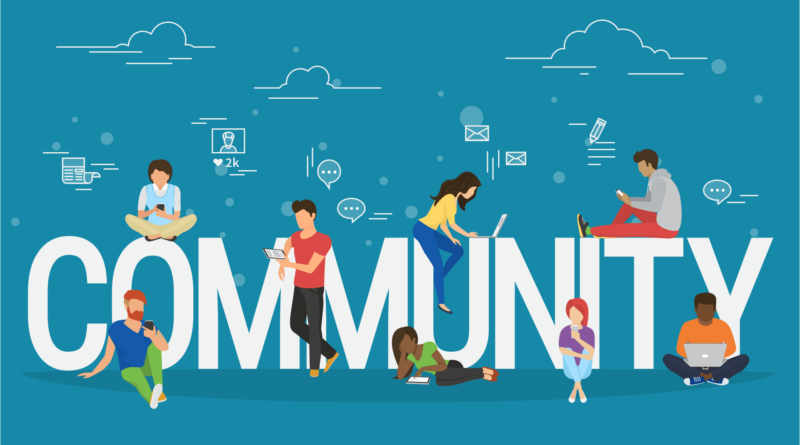

A Collective Approach to Providing Digital Skills Training Among Lay Community Members

The digital divide is a social inequality and challenge among low-income communities in the US (Vogels, 2021) that spans beyond access to devices and Internet connection. Digital skills training to access essential Internet-based resources like healthcare, employment and education, is still necessary (Deursen & Dijk, 2011). The recent COVID-19 pandemic aggravated the problem, especially among resource-constrained communities and seniors.
Thus, this project focus on (1) a community-based participatory research collaboration between a university team and non-profit, which involved curating and coordinating online courses with offline peer-support to provide digital training among 9 community members to serve as intermediaries who provide community digital support, and (2) the outcomes of the digital skills training among them. Community-member trainees increased self-efficacy in digital skills, were able to apply for basic resources, gained employment at the non-profit and have begun to provide digital support within the community. Our findings suggest a potential model for community social learning and basic digital skill development, and contributes to minimizing barriers of online learning, especially among traditionally excluded populations (Dillahunt et al., 2014; Escueta et al., 2017).
Our survey results show increased self-efficacy in learning digital skills. In the final presentation of the training, one team member said in reference to receiving and providing team support:
“We pick up where one leaves off… There were times when we wanted to give up because of what we didn’t know, but we encouraged each other not to... We learned you don’t have to be naturally gifted at computers when taking this training.”